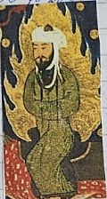
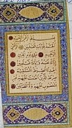
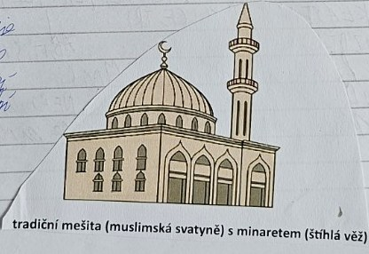
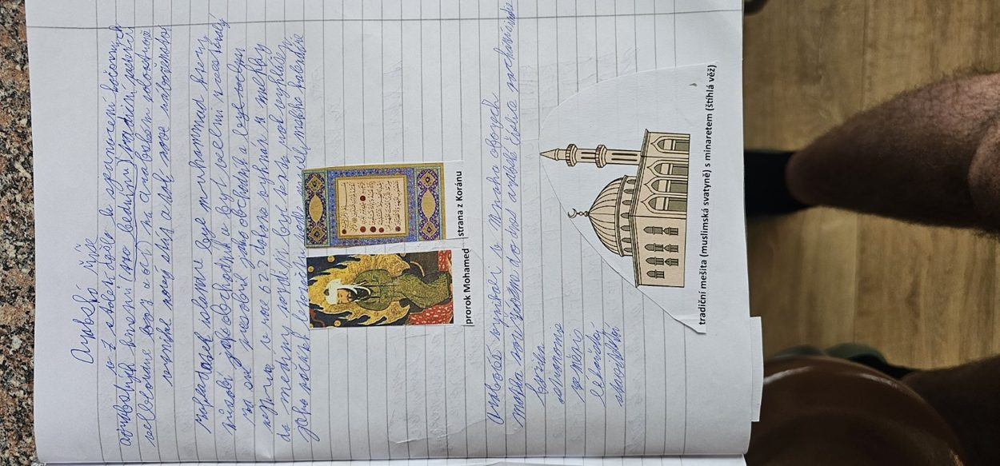

7.–10. století
Arabská říše a islám
V 7. století se sjednotily kočovné arabské kmeny a vzniklo nové náboženství, islám. Arabové vynikali v matematice a dalších vědách, byli zdatní obchodníci a dali nám arabské číslice i mnoho slov.
Zvýrazněné je v sešitě podtržené.
- 622 Hidžra: Mohamed odchází z Mekky do Medíny, počátek muslimského letopočtu
- 732 Karel Martel poráží Araby u Poitiersi v tématu Franská říše
Vznik arabské říše a islámu


V 7. století došlo ke sjednocení kočovných arabských kmenů, tzv. beduínů. Beduíni byli tradiční pastevci velbloudů, koz a ovcí a putovali se stády pouští. Na Arabském poloostrově tak vznikl nový stát a také nové náboženství, islám.
Zakladatelem islámu byl Muhammad (Mohamed). Působil jako obchodník a hodně cestoval. V roce 622 musel odejít z Mekky do Medíny. Později byl tento rok vyhlášen jako počátek letopočtu podle muslimského kalendáře: pro muslimy je to „rok 1“.
Posvátnou knihou islámu je Korán (obrázek v sešitě).

Muslimskou svatyní je mešita. Štíhlá věž u ní se jmenuje minaret.
Věda a vzdělanost
Arabové vynikali v mnoha oborech:
- matematika: dodnes používáme arabské číslice, které Arabové převzali z Indie,
- fyzika,
- astronomie,
- zeměpis,
- lékařství,
- stavitelství.
Proč je to důležité: s arabskými číslicemi se počítá mnohem snáz než s římskými (zkus vynásobit XLVII krát XIII). Proto se jimi počítá dodnes po celém světě.
Obchod a arabská slova
Arabové byli také zdatnými obchodníky. Do Evropy přivezli například cukrovou třtinu, citrony, pomeranče, rýži a bavlnu.
Arabsky mluvící židovský kupec Ibráhím ibn Jákúb v 10. století navštívil Evropu a zanechal nám nejstarší dochovaný písemný popis Prahy.
Proč je to důležité: je to nejstarší zpráva o Praze, kterou máme. Díky němu víme, jak Praha v 10. století vypadala.
V češtině najdeme mnoho slov arabského původu: algebra, cifra (číslo), cukr, káva, alkohol, matrace, elixír, citron.
Harún ar-Rašíd
Jedním z nejvýznamnějších chalífů (vládců arabské říše) byl Harún ar-Rašíd. Udržoval diplomatické styky se dvorem Karla Velikého a poslal mu neobvyklý dar: bílého slona.
Harún je také častým hrdinou slavné sbírky pohádek a příběhů Tisíc a jedna noc (Pohádky tisíce a jedné noci), která vznikala od 8. do 16. století. Pohádky v knize vypráví moudrá Šeherezáda.
Souvislost: roku 732 porazil Araby franský majordomus Karel Martel u Poitiers (téma Franská říše).
Paměťový obraz
- Karavana velbloudů: beduíni se sjednotí, Muhammad obchodník jede z Mekky do Medíny roku 622.
- Kalkulačka s nulou: arabské číslice z Indie.
- Loď plná citronů a cukru: arabští obchodníci, slova cukr, káva, citron.
- Kupec s pergamenem na Pražském hradě: Ibráhím ibn Jákúb popisuje Prahu.
- Bílý slon u Karla Velikého: Harún ar-Rašíd, Tisíc a jedna noc, Šeherezáda.
Vyzkoušej se
Odpověz nahlas, teprve pak otevři odpověď. Procvičit náhodně
Kdo byli beduíni?
Kočovné arabské kmeny, tradiční pastevci velbloudů, koz a ovcí.
Co vzniklo v 7. století na Arabském poloostrově?
Nový stát (po sjednocení beduínů) a nové náboženství, islám.
Kdo byl zakladatelem islámu a čím se živil?
Muhammad (Mohamed), byl obchodník.
Co se stalo roku 622?
Muhammad musel odejít z Mekky do Medíny; tímto rokem začíná muslimský letopočet.
Jaká je posvátná kniha islámu?
Korán.
Co je mešita a co minaret?
Mešita je muslimská svatyně, minaret štíhlá věž u ní.
Ve kterých oborech Arabové vynikali?
Matematika, fyzika, astronomie, zeměpis, lékařství, stavitelství.
Odkud Arabové převzali arabské číslice?
Z Indie.
Co přivezli arabští obchodníci do Evropy?
Cukrovou třtinu, citrony, pomeranče, rýži, bavlnu.
Kdo byl Ibráhím ibn Jákúb?
Arabsky mluvící židovský kupec, který v 10. století napsal nejstarší dochovaný popis Prahy.
Uveď slova arabského původu v češtině.
Algebra, cifra, cukr, káva, alkohol, matrace, elixír, citron.
Který chalífa udržoval styky s Karlem Velikým a co mu poslal?
Harún ar-Rašíd; bílého slona.
Jak se jmenuje slavná sbírka pohádek, ve které vystupuje Harún ar-Rašíd?
Tisíc a jedna noc (Pohádky tisíce a jedné noci).
Kdo vypráví pohádky Tisíce a jedné noci?
Šeherezáda.
Kdo porazil Araby u Poitiers roku 732?
Franský majordomus Karel Martel.
Zápis ze sešitu
Fotky stránek sešitu
